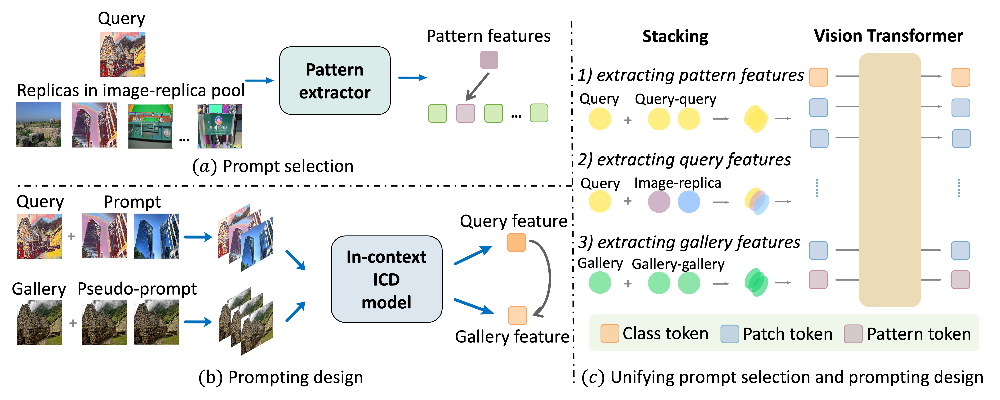
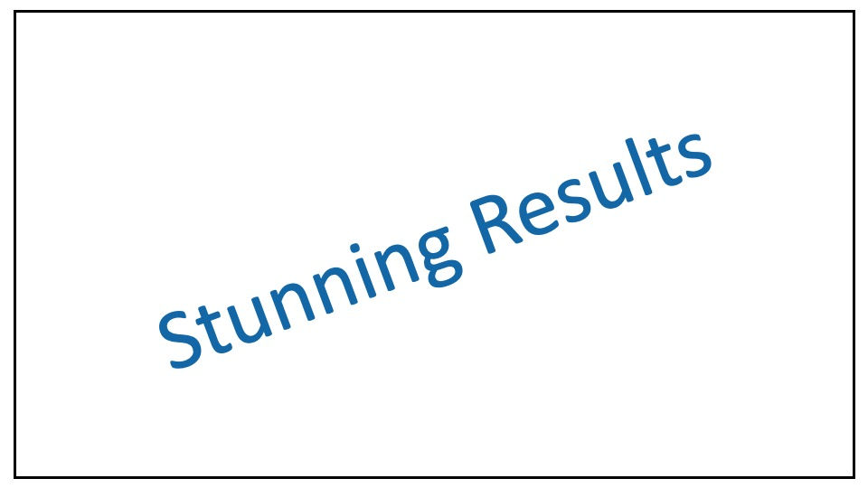

Top: The comparison between the standard updating process of Image Copy Detection (ICD) and the proposed in-context ICD. Unlike the standard updating approach, our in-context ICD eliminates the need for fine-tuning, making it more efficient. Bottom: AnyPattern is the first large-scale pattern dataset, featuring 90 base and 10 novel patterns. Using 90 base patterns, we generate a training dataset containing 10 million images.
Abstract
This paper explores in-context learning for image copy detection (ICD), i.e., prompting an ICD model to identify replicated images with new tampering patterns without the need for additional training. The prompts (or the contexts) are from a small set of image-replica pairs that reflect the new patterns and are used at inference time. Such in-context ICD has good realistic value, because it requires no fine-tuning and thus facilitates fast reaction against the emergence of unseen patterns. To accommodate the “seen → unseen” generalization scenario, we construct the first large-scale pattern dataset named AnyPattern, which has the largest number of tamper patterns (90 for training and 10 for testing) among all the existing ones. We benchmark AnyPattern with popular ICD methods and reveal that existing methods barely generalize to novel tamper patterns. We further propose a simple in-context ICD method named ImageStacker. ImageStacker learns to select the most representative image-replica pairs and employs them as the pattern prompts in a stacking manner (rather than the popular concatenation manner). Experimental results show (1) training with our large-scale dataset substantially benefits pattern generalization (+26.66% μAP), (2) the proposed ImageStacker facilitates effective in-context ICD (another round of +16.75% μAP), and (3) AnyPattern enables in-context ICD, i.e. without such a large-scale dataset, in-context learning does not emerge even with our ImageStacker.
Method Overview
[Code]
Results
Paper

Creative and Descriptive Paper Title
First Author, Second Author, Third Author, Fourth Author, and Fifth Author
In Conference, 20XX.
@InProceedings{author20XXtitle,
title = {Creative and Descriptive Paper Title},
author = {Author, First and Author, Second and Author, Third and Author, Fourth and Author, Fifth},
booktitle = {Conference},
year = {20XX},
}Acknowledgements
This template was originally made by Phillip Isola and Richard Zhang for a colorful project, and inherits the modifications made by Jason Zhang. The code can be found here.